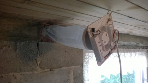
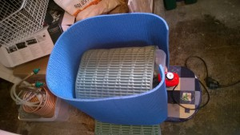
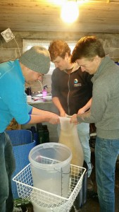
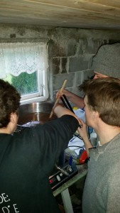

Batch #7 – Golden Standard – Unfogged Championship APA
Nok en Lucky Jack – klone! (Som nok en gang, men på nye måter, feiler fra start ved ingrediensavvik og -forvirring. Men ØL blir det!)
10:15 Varmer meskevann. Steffen er så langt helt alene. 27 liter skal opp til 70,6 grader, får så da å synke til mesketemperatur 64,4. Alle temperaturer i følge Beersmith.11:20: 10,250 kg Malt tilsettes. Temperatur synker til 64,4. I alle fall når vi måler i overflaten. Lengre nede ble det fort godt over 70.
TIPS TIL NESTE GANG: Varme meskevann til mesketemperatur, og heller varme opp litt ekstra om temperaturfall skjer, heller enn å gå glipp av masse godt 65-graders-sukker?11:45 Leif observerer posesig. Situasjon avklart.
11:54 Gaute observerer posesig. Situasjon nok en gang avklart. 
12:11 Avtrekksvifte defineres som «ferdig». Setninger som «her er det jo nesten ikke tåke!» ytres på mer eller mindre reelt grunnlag herfra og ut dagen.

12:19 Skyllevannet (som ER satt til oppvarming!) holder bare 45 grader. Jonas legger et lokk temmelig løselig oppå baljen, mener hardnakket det vil hjelpe. Steffen iverksetter «operasjon liggeunderlag». Gaute skulle ønske han kunne gjøre matten på energitapet.

12:30 Digitalt termometer defineres «fucked».
12:48 Jod-test ca. OK
12:51 Skylling etter mesk i 90 min. Skylles med 34 liter vann, alt vann kjøres gjennom malten, men noe skyllevørter (5-6 liter?) må tas vare på til senere tilsetning, da gryta er full.


13:02 Det fastslås at termometeret ligger i bunn av gryta.


13:10 Termometer reddet, etter midlertidig senkning av vørternivået.
13:15 Preboil SG 45. Eller 11,8 brix, om man vil. Settes på oppkok.
13:50 Kokestart. Skum fjernes delvis. Noe skum røres inn akkurat som de gjør på Tine når de lager ost. For det gjør jo vi…
14:00 Etterfyller (tynn) vørter fra skylling.
14:20 Gaute tilfredsstiller seg selv med meieriteknikker. Steffen er StarSatan, noe Leif har hørt at alle Haandbryggerlaug må ha.
14:30 10 g Perle 4,8%
15:15 75 g Chinook 12,1% + gjærnæring + klaringsmiddel + kjøler. Svært fullt i gryta….
15:20 40g Athanum 4,8% og 29g Amarillo 11,9%
15:30 kokestopp – kjøling OG = 49 (Beersmith sa 49)
16:03 Vørter ferdig på dunker (24 og 21 liter) med O2 og Gjær. Vi tok med (nesten) alt grums over på dunk
16:17 Ferdig vasket og ferdig snakka. 6 timer og 2 min.

Dessuten: Alle målinger underveis var skremmende nære Beersmith ™ sine anbefalinger og forutsigelser. Og ingen sikringer røyk. Dette kan skyldes:
* Steffen tok ikke en “Steffen”, og glemte IKKE å varme skyllevann. (Som på #6)
* Leif tok IKKE en “Leif” og svidde IKKE koreawatten (men skallet i lampen)(Som på #6)
* Gaute tok IKKE en “Gaute” og stakk IKKE bare innom (Som på #6)
* Jonas tok IKKE en “Jonas” og var IKKE på korpsting (Nytt)
* (Fredrik tok for så vidt en “Fredrik” og var på LAN (ble det vedtatt), men det viser jo bare at vi har enda mer å gå på!)
Rapporter i etterkant melder om et utgjæret øl med FG 1,012, helt uten tåke. Avtrekksviften hadde nok større virkning på bryggeprosessen enn først antatt.
Flasket av Steffen og Fredrik etter 14 dager, 18. jan. Est. ABV: 4,9% før karbonering, 5,1% etter. Bør holde til en lun NM-feiring.